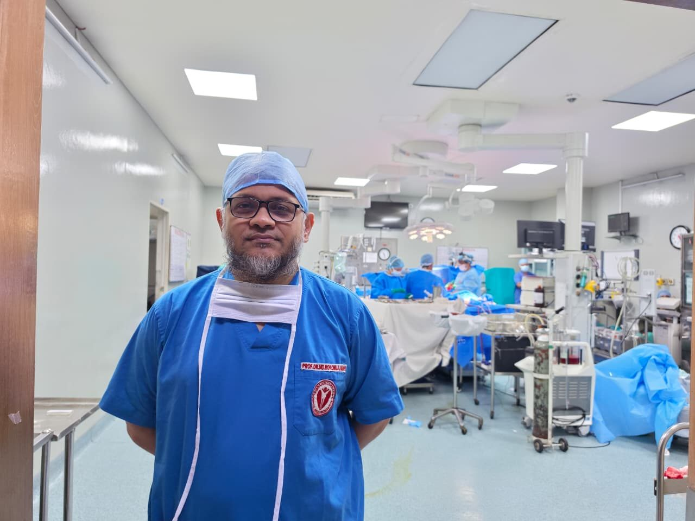

+880 1711-311200
Call for appointment / WhatsAppMICS
Bangladesh's 1st MICS VSD ClosureAbout Me
Professor Dr. Md. Rokonujjaman (Selim)
MBBS | MS (CVTS) | FCPS (CVS) | MRCPS (Glasgow) | FACS (USA) | Minimally Invasive Cardiac Surgeon
Minimally Invasive Cardiac Surgery (MICS)প্রফেসর ডা. মোহাম্মদ রোকনুজ্জামান (সেলিম) একজন প্রখ্যাত কার্ডিয়াক সার্জন, যিনি বর্তমানে Ibrahim Cardiac Hospital & Research Institute-এর Department of Cardiac Surgery-তে Professor & Senior Consultant হিসেবে কর্মরত। তিনি Minimally Invasive Cardiac Surgery (MICS)-এ বিশেষজ্ঞ এবং বাংলাদেশে সর্বপ্রথম MICS VSD (Ventricular Septal Defect) closure সার্জারি সম্পন্ন করার গৌরব অর্জন করেছেন। তাঁর অভিজ্ঞতায় বাংলাদেশে সর্বোচ্চ সংখ্যক MICS VSD closure সার্জারি সম্পন্ন হয়েছে।
He completed MBBS from Chittagong Medical College and MS in Cardiovascular & Thoracic Surgery from the National Institute of Cardiovascular Diseases (NICVD). He is a Fellow of the Bangladesh College of Physicians and Surgeons (FCPS — CVS) and a Fellow of the American College of Surgeons (FACS, USA).
He received his international fellowship training from:
 South Korea
South Korea Malaysia India
Malaysia IndiaHe was born and raised in Gazipur Cantonment. He completed his SSC from Gazipur Cantonment Board High School in 1989 and his HSC from Notre Dame College, Dhaka, in 1991. His ancestors were originally from Sirajganj District, Bangladesh.